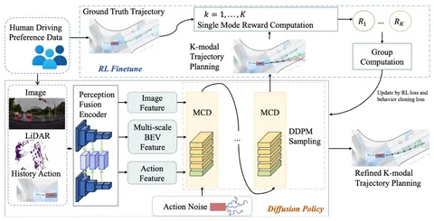

Обычно планировщики для вождения обучаются на демонстрациях очень разных водителей. Одни предпочитают водить безопасно, другие — быстрее оказываться дома за счёт более рисковых манёвров. Типичная модель-планировщик выдаёт усреднённое вождение. В сегодняшней статье авторы задаются вопросом, как сделать стиль вождения планировщика более выраженным.
RLHF (reinforcement learning from human feedback) — тот самый алгоритм, который используют для алайнмента моделей под потребности людей в текстовых LLM, в том числе в оригинальном ChatGPT: людей просили людей ранжировать ответы, и по их оценкам нейросеть обучалась говорить приятное и полезное.
Алгоритм редко применялся для решения задач автономного транспорта. В этой статье авторы тоже получили своего рода кашу из топора: фундаментальная идея подхода сохранилась, но реализацию каждой детали изменили. Тем не менее, ключевой результат всё равно получился интересным:
Исходная архитектура — мультимодальная диффузионка. Не самый типичный выбор для планировщика, но и не первое упоминание такого подхода: претрейн для всех стилей одинаковый, а диффузионка позволяет лучше сохранять всё распределение возможных траекторий.
Самое интересное происходит во время дообучения. Если для претрейна используют данные о водителях с очень разными стилями вождения, то для файнтюна предлагают фильтровать сцены, оставляя только подходящие. Далее тренируют отдельную модель награды, которая должна присваивать траекториям одинакового стиля более высокий скор, если их сгенерировал человек, а не претрейн-модель. Эти награды помогают дообучить основную модель с GRPO на крошечном датасете: 5 тысяч сцен против полумиллиона в претрейне. То есть, авторы буквально активируют определённый стиль, в котором модель уже умеета водить.
Метод отлично работает — на бенчмарке ощутимо меняется профиль скорости, метрики сильно растут в соответствии со стилем. На общих датасетах результаты ожидаемо немного проседают, но не драматично.
Разбор подготовил
404 driver not found
